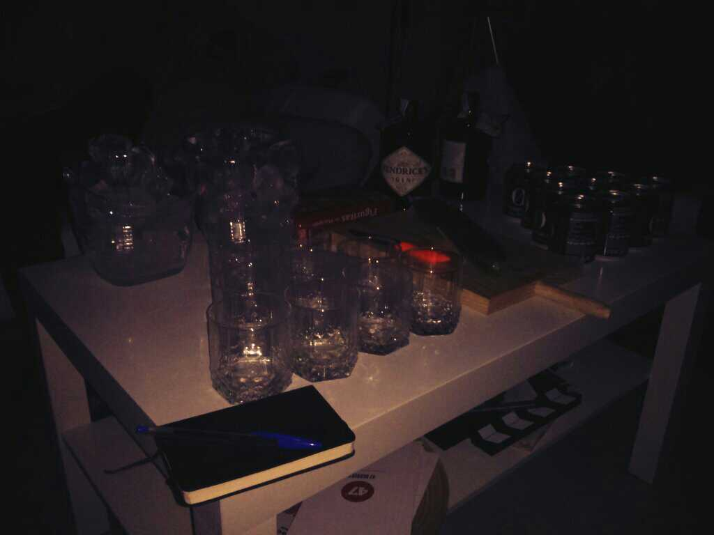
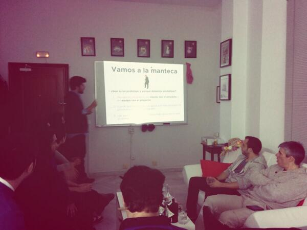

GinAndUX, primer día

Mesa preparada para el GinAndUX (en 47 Degrees)
En el último Betabeers de Cádiz al que fui, una de las ideas que más me gustó fue la que propuso Jorge: GinAndUX. Bien os puede parecer un tanto extraño o perfecto, pero después de ir a la primera edición sé que no puede haber una combinación mejor.
Antes de la manteca
Después de un primer momento botellona dónde todos estábamos de pie, con nuestro Gin tonic y contando anécdotas, empezamos a sentarnos para abrir la primera quedada.
Me quedé impresionado con el público. Allí nos habíamos reunido personas de Cádiz y Sevilla, pero no solo eso, eramos desde tipógrafos y diseñadores, a desarrolladores web y móvil pasando por expertos en usabilidad y aprendices. Sólo por conseguir aunar a personas que trabajamos en campos que no deberían estar tan separados, pero por desgracia lo están, demuestra que la experiencia de usuario está ahí y consigue que un equipo multidisciplinar formen un sólo conjunto.
Jorge hizo una introducción a la Ginebra que bebimos, aunque Hendrick no nos diera amor. Personalmente ni suelo beber ni soy un erudito en Ginebras, pero después de cortar ese pepino de 30 centímetros, la verdad es que sabía bastante bien.
¡A la manteca!

Vamos a la manteca (Foto de @raulraja
En esta primera sesión se habló sobre prototipado. Aprovechando que eramos unos 15 asistentes, las diapositivas eran introducidas y comentadas por todos.
Principalmente tratamos sobre la importancia del prototipado dentro del proceso de desarrollo de una aplicación. Este punto de parada antes de comenzar a diseñar/codificar permite que el cliente y todo el equipo formen parte del proyecto como uno solo, no como varias partes.
Por su parte, el cliente es capaz de exponer sus ideas y con ayuda del equipo desarrollador, exponer y validar estas como prototipo con el fin de ahorrar tiempo en el futuro y que ambas partes queden satisfechas con el producto final. Quiero destacar la importancia del equipo en esta parte, pues como se dijo, un cliente no tiene que saber qué es un prototipo, somos nosotros los que debemos de enseñarle que esta es la mejor manera ganar tiempo e integrarse en el proyecto como uno más.
Esto derivó en una charla entre las experiencias personales de cada uno en referencia a los clientes. Sabemos que no siempre están dispuestos a formar parte de una manera tan directa, pero como concluyeron los componentes de 47 Degrees: si un cliente está realmente interesado en desarrollar su aplicación y tú le ofreces la posibilidad de acercarse, este querrá hacerlo.
Tras el debate entre cliente y proyecto pasamos a las herramientas para la realización de sketchs y wireframes. Destacaron aplicaciones como Sketch y POP. Estas herramientas se complementan pues con sketch podemos realizar wireframes sencillos o detallados y con POP los hacemos navegables como si fueran aplicaciones móviles. Son dos herramientas muy poderosas pues combinadas nos hacen tener una visión muy real de como será la aplicación en futuro.
Fin de la manteca
Entre Gin tonics y comentarios acabamos con la manteca, pero por supuesto con ganas de más. Personalmente creo que es un gran evento, pues como he comentado, UX une a todos en un mismo objetivo y en las charlas tenemos experiencias de todos los gustos y colores.
Si a esto unimos buena gente, una mesa de ping pong y Gin tonics de por medio, como resultado tenemos tres horas de convivencia y aprendizaje que no cambio por nada. Os animo a todos a entrar en estos grupos pues una vez que vas a uno, cada semana que puedas sacar algo de tiempo tendrás otro a donde ir.
Sin más dejo por aquí unos enlaces de interés sobre el evento y una comunidad de facebook y me quedo a la espera de enlazar a este artículo las diapositivas de la charla. Cualquier error en el texto o idea que haya escrito mal o se me haya pasado, no dudéis en avisar ;)